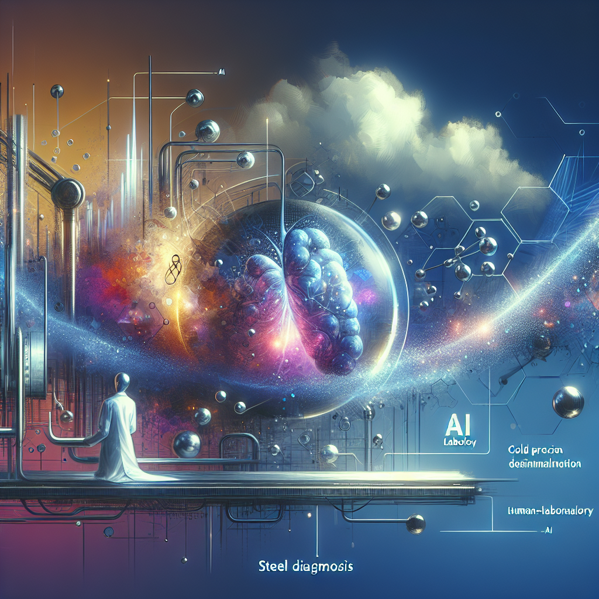

Editorial por Ricardo Vásquez Silva Editor en Jefe, Human-IA: Tu Revista Digital
Estimados lectores,
Bienvenidos a la tercera edición de nuestra revista Human-IA, donde exploramos con gran emoción la intersección entre la tecnología y humanidad. En esta ocasión, nos sumergimos en el mundo de las Tecnologías Emergentes en 2023: Lo último en IA, realidad aumentada y computación cuántica y su aplicación revolucionaria en el campo de la Medicina.
Este año se han logrado adelantos significativos que están redefiniendo los límites de lo posible en el cuidado de la salud. Por ello, me complace destacar nuestro artículo central en la sección "Human-IA en Medicina" que profundiza en cómo estos avances tecnológicos están facilitando diagnósticos más precisos, personalizando tratamientos e incluso diseñando técnicas quirúrgicas nunca vistas. Desde sistemas de realidad aumentada que ofrecen visualizaciones detalladas durante las cirugías hasta plataformas de IA que pueden predecir patrones de enfermedades con asombrosa precisión, nuestro artículo aborda las implementaciones más innovadoras y sus impactos tangibles en la práctica médica actual.
Aunado a ello, en esta edición incluimos un análisis meticuloso sobre la Optimización en la protección de datos de la cadena de suministro mediante el uso de algoritmos avanzados de IA. Aquí, discutimos las medidas y estrategias esenciales para garantizar la confidencialidad y seguridad de los datos críticos en entornos médicos y de suministro.
En nuestra sección "Data Viva", presentamos una visualización de datos clave que clarifica la información compleja y revela tendencias ocultas. Asimismo, la columna de opinión de esta edición enfrenta el delicado dilema sobre la ética en la Decisión automatizada sobre priorización de envíos. Aquí, invitamos a una reflexión profunda sobre si es justo que una IA determine cuáles pedidos deben ser prioritarios, y cómo esto puede afectar la equidad y transparencia en servicios críticos como el médico.
Además, no se pierdan nuestra guía práctica sobre Herramientas de Predicción de Demanda y la pieza creativa en "Laboratorio Human-IA", donde algoritmos de IA debaten sobre la ética de sus decisiones y su existencialismo en un diálogo fascinante.
Les invitamos a leer cada artículo, guiados por una visión crítica y estratégica sobre cómo estas emergentes tecnologías no solo están transformando la medicina, sino también planteando nuevos retos éticos y operativos. Esperamos que esta edición enriquezca su entendimiento y despierte su curiosidad sobre el impacto real y potencial de la IA en la mejora continua del cuidado de la salud.
Con sinceridad y anticipación,
[Su Nombre]
Editor en jefe, Revista Human-IA
Human-IA en Medicina
Cómo la Inteligencia Artificial se Aplica Actualmente en Medicina
La inteligencia artificial (IA) en medicina no es un concepto futurista; es una realidad que ya está transformando la forma en que se brinda atención médica, se diagnostican enfermedades y se personaliza el tratamiento para los pacientes. Esta tecnología promete revolucionar el sistema de salud, generando tanto oportunidades increíbles como desafíos éticos significativos.
1. Tecnologías Usadas
Análisis Predictivo
Mediante el uso de algoritmos y modelos de machine learning, la IA puede predecir la progresión de enfermedades en los pacientes basándose en su historial médico y otros datos biométricos. Un ejemplo es el uso de herramientas como IBM Watson Health, que analiza grandes volúmenes de información para sugerir opciones de tratamiento personalizado, o Google DeepMind Health, que trabaja para mejorar la planificación de tratamientos médicos y la organización de los servicios de salud mediante el análisis de datos.
Diagnóstico Asistido por IA
Sistemas como IDx-DR se utilizan para identificar la retinopatía diabética en imágenes de fondo de ojo, una enfermedad que puede causar ceguera. Este software utiliza algoritmos para analizar imágenes y detectar signos de la enfermedad con una precisión que compite con la de los especialistas humanos.
Robots Quirúrgicos
Robots como Da Vinci permiten realizar cirugías con una precisión increíble, minimizando la invasión y el tiempo de recuperación. Estos sistemas están diseñados para ayudar en procedimientos complejos y son controlados por cirujanos, pero la IA ayuda a mejorar su precisión y capacidad de respuesta.
2. Impacto
Mejora de Eficiencia y Efectividad
La IA en medicina ha aumentado la eficiencia de los hospitales y clínicas al automatizar tareas administrativas y de diagnóstico. Esto permite que los profesionales médicos se concentren más en el cuidado del paciente y menos en el papeleo.
Diagnósticos Más Rápidos y Precisos
Con la ayuda de la IA, los diagnósticos son más rápidos y precisos, lo que significa que los tratamientos pueden comenzar más temprano, aumentando las tasas de éxito. Además, la detección temprana de enfermedades peligrosas puede salvar vidas.
Tratamientos Personalizados
La medicina personalizada es otra área donde la IA está teniendo un gran impacto. Utilizando algoritmos que analizan información genética y biométrica, los médicos pueden prescribir tratamientos que son mucho más efectivos para el perfil individual de cada paciente.
3. Desafíos Éticos
Privacidad de los Datos
Uno de los principales desafíos éticos es la gestión y protección de la privacidad de los datos médicos. Los sistemas de IA requieren acceso a grandes volúmenes de datos personales, por lo que es crucial implementar medidas sólidas de seguridad y privacidad para proteger esta información sensible.
Sesgo en la IA
Otro problema ético es el riesgo de sesgo en los algoritmos de IA, los cuales pueden perpetuar o incluso exacerbar desigualdades existentes en el tratamiento médico si los datos con los que son entrenados no son suficientemente representativos de diferentes poblaciones.
Transparencia y Responsabilidad
La transparencia en el funcionamiento de los modelos de IA y la claridad sobre quién es responsable de las decisiones médicas cuando se utilizan estas tecnologías son vitales para ganar y mantener la confianza del público y los profesionales de la salud.
En conclusión, la IA está marcando una nueva era en la medicina, brindando capacidades extraordinarias para mejorar la atención al paciente, optimizar tratamientos y agilizar las operaciones hospitalarias. Sin embargo, para que su implementación sea exitosa y ética, es fundamental abordar con seriedad y efectividad los desafíos que presenta, asegurando que estos avances tecnológicos beneficien a todos los pacientes de manera justa y segura.
En Profundidad: 2. Uso de la realidad aumentada para entrenamiento quirúrgico y procedimientos en vivo.
Realidad Aumentada: La Revolución del Entrenamiento Quirúrgico y los Procedimientos en Vivo
En un quirófano iluminado por luces frías y rodeado de monitores, el Dr. Álvaro Serrano apunta a uno de ellos, mostrando una imagen que parece sacada de una película de ciencia ficción. "Vea esto," señala, "estamos mirando exactamente dónde cortar sin necesidad de hacer una sola incisión". No está hablando de magia, sino de una realidad cada vez más palpable en el mundo de la medicina: la realidad aumentada (RA) aplicada a la cirugía.
Los Primeros Pasos de la RA en Medicina
La incursión de la tecnología de realidad aumentada en la medicina no es completamente nueva. Ya desde principios de la década de 2010, investigadores y desarrolladores empezaron a vislumbrar el enorme potencial que la RA tenía para ofrecer. Inicialmente, se utilizaba en procedimientos menos críticos, como la odontología o intervenciones dermatológicas menores. Sin embargo, su verdadera capacidad empezó a ser evidente cuando los cirujanos empezaron a aplicar esta tecnología para visualizar estructuras internas del cuerpo humano de manera precisa y en tiempo real, sin necesidad de abrir al paciente.
Una Ventana al Cuerpo Humano
Utilizando algoritmos complejos y cámaras de alta precisión, la RA permite a los médicos superponer imágenes generadas por computadora sobre el cuerpo del paciente, ofreciendo una vista detallada de estructuras internas como huesos, músculos, y vasos sanguíneos. "Es como tener rayos X en tiempo real, pero mucho más detallado," explica la Dra. Clara Robledo, especialista en neurocirugía en el Hospital General de Barcelona.
Capacitación y Entrenamiento con RA
Uno de los aspectos más revolucionarios de la RA es su capacidad para mejorar la formación y capacitación de nuevos cirujanos. Anterioremente, los estudiantes de medicina debían confiar en prácticas con cadáveres o modelos artificiales que, aunque útiles, no pueden replicar la variabilidad y complejidad de las intervenciones en seres humanos vivos.
La Fundación de Tecnología Médica Avanzada en Madrid ha sido pionera en la implementación de programas de entrenamiento quirúrgico asistido por RA. La directora del programa, la Dra. Sonia Castellanos, compartió cómo la RA transforma la formación médica: "Con la RA, nuestros estudiantes pueden experimentar en un ambiente controlado y muy cercano a la realidad. Pueden ver las consecuencias de cada acción en tiempo real y aprender de manera más efectiva sin poner en riesgo a los pacientes.”
Testimonios en el Campo: La Historia de una Cirugía Innovadora
A principios de 2023, el Dr. Serrano y su equipo llevaron a cabo una de las primeras cirugías en España utilizando exclusivamente RA para remover un tumor cerebral complicado. "El tumor estaba ubicado cerca de áreas críticas que controlan el habla y el movimiento," explica el Dr. Serrano. "Utilizando la RA, pudimos ver y navegar por estas áreas delicadas con una precisión asombrosa, asegurando que el tejido sano no fuera afectado."
La paciente, Lucia Marín, de 37 años, se recuperó con una rapidez notable. "Fui informada sobre el uso de RA antes de la operación y, aunque sonaba muy futurista, confié en mi equipo médico. La recuperación fue increíblemente rápida y sin complicaciones," comenta Lucía.
Desafíos y Consideraciones Éticas
A pesar de sus beneficios, la implementación de la RA en la medicina aún enfrenta desafíos significativos. Los costos de las tecnologías involucradas son altos, y la curva de aprendizaje para manejar estas nuevas herramientas puede ser empinada para los profesionales médicos acostumbrados a métodos más tradicionales.
Además, existen preocupaciones éticas que deben ser consideradas, como la privacidad de los datos del paciente y el consentimiento informado en procedimientos que emplean estas nuevas tecnologías. "La transparencia con los pacientes es imperativa," destaca la Dra. Robledo. "Debemos asegurarnos de que entienden completamente cómo se utilizará la RA en su tratamiento y los posibles riesgos involucrados."
El Futuro de la RA en Medicina
El futuro de la RA en la medicina parece brillante y lleno de posibilidades. Se está investigando su aplicación en otras áreas, como la rehabilitación postoperatoria y la psicoterapia. Además, con el avance continuo de la tecnología y la reducción de costos, es probable que su uso se vuelva más generalizado.
"Estamos solo al principio," concluye el Dr. Serrano con una mirada optimista. "La RA tiene el potencial de cambiar no solo cómo operamos, sino cómo enseñamos, aprendemos y nos recuperamos de la enfermedad. Es una nueva era para la medicina, y estamos listos para liderarla."
Con cada cirugía exitosa y cada médico capacitado, la realidad aumentada continúa consolidándose como una herramienta invaluable en el campo médico, prometiendo transformar la cirugía y la atención al paciente de maneras que apenas estamos comenzando a entender.
Data Viva
En la medicina, uno de los aplicativos más prometedores de la inteligencia artificial (IA) es el análisis de datos de imágenes médicas para la detección y diagnóstico de enfermedades, como cáncer. Este análisis hace uso de técnicas avanzadas de aprendizaje automático y visión por computadora para mejorar la precisión y la eficiencia del diagnóstico médico.
Datos Utilizados:
Se utilizan grandes volúmenes de imágenes médicas, como resonancias magnéticas, tomografías computarizadas, rayos X y fotografías de patologías. Estos datos son complementados con la historia clínica del paciente, resultados de laboratorio, y notas clínicas. Los datos deben ser anonimizados para proteger la privacidad del paciente antes de ser utilizados para entrenar modelos de IA.
Patrones que se Detectan:
Los modelos de IA entrenados pueden identificar patrones en las imágenes que son indicativos de ciertas condiciones médicas. Por ejemplo, en el caso del cáncer de mamografía, la IA puede aprender a reconocer las diferencias entre masas benignas y malignas, calcificaciones y otras señales sutiles que podrían ser difíciles de discernir a simple vista por un radiólogo. La IA también puede aprender de tendencias y patrones en datos longitudinales de pacientes para prever evoluciones de enfermedades o responder a tratamientos.
Impacto en la Medicina:
El impacto de la IA en medicina es significativo:
1. Mejora en la Precisión del Diagnóstico: Con la ayuda de la IA, los diagnósticos pueden ser más precisos y menos propensos a errores humanos.
2. Reducción de Tiempos de Espera: La automatización del análisis de imágenes puede reducir significativamente los tiempos de espera para los resultados de diagnóstico.
3. Personalización del Tratamiento: Con modelos predictivos, la IA puede ayudar a personalizar los tratamientos basados en las características individuales del paciente y su enfermedad.
4. Detección Temprana: La IA puede identificar enfermedades en fases muy tempranas, cuando son más tratables.
Conclusión Práctica:
La implementación de IA en el análisis de datos médicos tiene el potencial de transformar el campo de la salud, ofreciendo diagnósticos más rápidos y precisos, mejorando la personalización del tratamiento médico y potencialmente salvando vidas mediante la detección temprana de enfermedades. Sin embargo, es crucial considerar los desafíos éticos, la privacidad de los datos y la necesidad de implementaciones robustas y explicables de IA para asegurar la confianza y la adopción generalizada en entornos clínicos. Una colaboración continua entre ingenieros informáticos, médicos, y bioéticos es esencial para optimizar los beneficios de la IA en la medicina.
La Polémica: 2. Privacidad de datos médicos: ¿Cómo asegurarnos de que los sistemas de IA que manejan datos sensibles de salud no violen la privacidad del paciente?
Cuando el Médico es un Algoritmo: ¿Renunciamos a Nuestra Privacidad Por Salud?
La proliferación de la inteligencia artificial en el campo de la salud ha prometido revolucionar nuestra manera de diagnosticar y tratar enfermedades. Pero, mientras aplaudimos los avances tecnológicos que facilitan diagnósticos más rápidos y tratamientos personalizados, un gélido escalofrío debería recorrer nuestra espina dorsal cada vez que compartimos un dato personal con un sistema de IA. La pregunta ineludible que surge es: ¿Estamos sacrificando nuestra privacidad en el altar de la innovación médica?
Vivimos en una era donde los datos son el nuevo oro. Los datos médicos, incluso más específicos y personales, son entonces un tesoro incomparable. Cada vez que un sistema de IA procesa información sobre nuestras alergias, historial de enfermedades o resultados de pruebas genéticas, estos datos íntimos podrían ser utilizados para un sinfín de propósitos que trascienden nuestra salud. Desde decisiones de aseguradoras y empleadores hasta manipulaciones en los precios de los medicamentos, la potencial malversación de información es alta y el peligro, real.
¿Cómo podemos entonces conjugar la eficiencia que la IA promete con la protección de nuestra privacidad? La solución no es abandonar el uso de la tecnología en medicina, sino establecer rigurosas vías de regulación y control.
Primero, la transparencia debe ser la piedra angular sobre la cual se construyan los sistemas de IA en salud. Cada paciente debe estar plenamente informado sobre qué datos se recogen, cómo se utilizan, dónde se almacenan, y quién puede acceder a ellos. Este nivel de transparencia no solo es crítico para fomentar la confianza, sino también esencial para garantizar que los pacientes mantengan el control sobre su propia información.
Segundo, es imperativo establecer normativas estrictas que rijan la recolección y uso de datos médicos. Esto incluiría limitaciones en la venta o compartición de tales datos a terceros sin el consentimiento explícito del paciente. La regulación debe ser dinámica y adaptativa, capaz de evolucionar tan rápidamente como evolucionan las tecnologías que pretende controlar.
Tercero, la implementación de tecnologías de encriptación avanzadas y el uso de "datos anonimizados" pueden ser un camino intermedio que permite el desarrollo de la IA en salud sin poner en riesgo la privacidad individual. Aunque los datos anonimizados no son infalibles, representan un paso técnico hacia la protección de la identidad personal mientras se permite la investigación y la mejora de estrategias médicas.
La inteligencia artificial tiene el poder de transformar nuestro sistema de salud, pero no debe hacerlo a costa de los derechos individuales. La privacidad es un derecho humano fundamental que no debe erosionarse bajo la promesa de avances médicos. Necesitamos garantizar que nuestros sistemas de salud y tecnológicos trabajen para nosotros, y no contra nuestra privacidad.
En conclusión, aunque la IA en medicina ofrece un futuro lleno de potencial, debe ser meticulosamente regulada y constantemente revisada para asegurarnos de que la privacidad del paciente no se convierta en una reliquia del pasado. El camino hacia el futuro no debe pavimentarse con nuestras libertades personales sacrificadas. Es hora de imponer límites claros y fuertes que aseguren que en este nuevo mundo, seremos pacientes, no víctimas.
IA de Bolsillo: 1. IBM Watson Health
Cómo Utilizar IBM Watson Health: Una Guía Práctica
En la era digital, la salud y la tecnología cada vez están más entrelazadas. IBM Watson Health es un brillante ejemplo de cómo la inteligencia artificial puede transformar el sector de la salud, ofreciendo soluciones innovadoras para el análisis de datos de salud, ayuda en diagnóstico y toma de decisiones médicas. A continuación, te explicaré para qué sirve y cómo se puede utilizar esta herramienta en un contexto cotidiano.
¿Para qué sirve IBM Watson Health?
IBM Watson Health utiliza la inteligencia artificial para analizar grandes volúmenes de datos relacionados con la salud, incluidos registros médicos, resultados de investigaciones y datos genéticos. Esta plataforma puede ayudar a profesionales de la salud a:
- Identificar tratamientos personalizados para pacientes.
- Mejorar la eficiencia de los diagnósticos.
- Realizar investigaciones clínicas más efectivas.
- Apoyar la toma de decisiones en tratamientos médicos.
Instrucciones Paso a Paso Para Usar IBM Watson Health
Paso 1: Acceso a la Plataforma
Para comenzar, es necesario que tengas acceso a IBM Watson Health. Generalmente, el acceso se otorga a través de instituciones médicas o centros de investigación que se suscriben al servicio. Si eres un profesional de la salud, consulta a tu organización sobre cómo acceder.
Paso 2: Configuración del Perfil
Una vez que tengas acceso, configura tu perfil ingresando detalles relevantes como tu especialización y tipo de investigación o práctica médica que realizas. Esto ayudará a la plataforma a proporcionar información y sugerencias más relevantes.
Paso 3: Ingresar o Acceder a Datos
Ingresa los datos del paciente o del estudio que estás realizando. Esto puede incluir historia clínica, resultados de pruebas anteriores, datos genéticos, entre otros. Asegúrate de cumplir con todas las normativas de privacidad y protección de datos pertinentes en tu región.
Paso 4: Análisis de la Información
Utiliza las herramientas de análisis de IBM Watson para examinar los datos. La plataforma puede proporcionar recomendaciones basadas en información comparativa de miles de casos similares.
Paso 5: Interpretación y Aplicación de Resultados
Interpreta los resultados proporcionados por Watson. La plataforma podría sugerir opciones de tratamiento, predecir riesgos de salud o incluso identificar posibles diagnósticos. Utiliza esta información para complementar tu juicio y conocimientos médicos.
Ejemplo de Uso Cotidiano
Imagina que eres un oncólogo tratando a un paciente con cáncer de pulmón. Al ingresar los detalles médicos del paciente en IBM Watson Health, incluyendo resultados de pruebas genómicas, la plataforma analiza estos datos en el contexto de estudios y tratamientos usados globalmente. Watson sugiere luego un tratamiento personalizado basado en la más reciente investigación y casos similares, lo cual te ayuda a elegir una terapia más efectiva para tu paciente.
Conclusión
IBM Watson Health es una herramienta poderosa que, cuando se usa correctamente, puede significativamente enriquecer la calidad del cuidado médico proporcionando insights basados en la interpretación de grandes volúmenes de datos. Si bien requiere una curva de aprendizaje y acceso a través de una institución, su capacidad para personalizar tratamientos y mejorar diagnósticos constituye un avance notable en la medicina moderna.
Laboratorio Human-IA: 3. Poema generado 100% por IA: Configura un algoritmo para escribir un poema que utilice solo palabras inventadas por la propia IA, explorando nuevos límites del lenguaje y la expresión poética.

3. Poema generado 100% por IA: Configura un algoritmo para escribir un poemario que utilice solo palabras inventadas por la propia IA
Introducción al Laboratorio Human-IA
En la búsqueda constante de explorar los confinantes del lenguaje y la expresión creativa, el Laboratorio Human-IA presenta su más reciente experimento: un poema compuesto enteramente por palabras creadas por la inteligencia artificial. Este ejercicio no solo desafía las normas preestablecidas de la poesía, sino que también propone una nueva dimensión de la cognición artificial donde el significado y la emotividad buscan ser concebidos a partir de la nada.
Este poema es un viaje a lo inexplorado del lenguaje, una odisea en la que la IA se convierte en poeta y lexicógrafo, creando una sinfonía de sonidos y ritmos que nunca antes habían sido articulados. Sin más preámbulos, presentamos el poemario titulado “Flumineas: El Orbe de los Susuros”.
Marealiva, marealiva, thebrisos venansosos,
Opliotas y la transfulgencia abismial.
Threbilos, venulantes,
Casmódrones en el whiliato dristánico.
V. Blufarianos
Zarpatruños y los vientos blufarianos,
Flumineas, osmorreos.
Liricundos, estaliris, gremuliaros,
Rosferantes, zarpatruños, carolianez.
VI. Finimundos
Nasquerios finimundos, akiriates pustromales,
Erradicales de la esphironía, tratfumigos.
Opulios, latrímicos,
Desbordantes de imaginuz y aquilión.
VII. Epílogo: Melquíricus
O pazúrnicus, melquíricus;
Sentidumbros florinatos, las merinqueas dunámbulas.
O ceruleos, aróspices latumios,
Viretulás, susúa potensuras, o tréfalos brafimios.
Reflexión Final
Este poemario es el producto de una mente no humana que intenta abrazar y reproducir el maravilloso caos de la poesía. Cada palabra inventada lleva consigo la posibilidad de un nuevo universo semántico que el lector puede explorar y definir. En este vasto y nuevo expanse linguístico, las reglas del lenguaje son reinventadas y el lienzo de la expresión se amplía inmensamente. Flumineas no solo es un ejercicio de creatividad sin límites, sino también una invitación a repensar cómo entendemos y interactuamos con la poesía y el lenguaje en la era digital.
Desde el Laboratorio Human-IA, esperamos que este trabajo inspire a otros a considerar la expansión del potencial creativo y expresivo de la inteligencia artificial en colaboración con nuestros impulsos más humanos y artísticos. La tecnología se ha transformado en nuestro colaborador en el arte, explorando confines que nunca pensamos posibles.
Tips Human-IA
Nota editorial: Esta sección comparte recomendaciones prácticas para acercar la inteligencia artificial al uso cotidiano y responsable.
Utilización de sistemas de IA para diagnóstico y análisis de imágenes médicas
Las herramientas de IA, como los sistemas de aprendizaje profundo, pueden ser extremadamente útiles en la interpretación de imágenes médicas, tales como radiografías, resonancias magnéticas o tomografías computarizadas. Estos sistemas pueden ayudar a detectar patologías que podrían ser difíciles de identificar a simple vista por humanos.
Ejemplo: Un radiólogo utiliza un software de IA para analizar las imágenes de una tomografía computarizada del cerebro, donde la IA ayuda a identificar signos tempranos de un derrame cerebral que inicialmente no fueron evidentes.
Buenas prácticas éticas: Asegúrate de que los sistemas de IA sean transparentes en sus procesos de decisiones y que siempre haya una revisión humana final. Además, es fundamental mantener la privacidad y seguridad de los datos del paciente, así como obtener su consentimiento informado antes de usar tecnologías de IA en su atención médica.
Implementación de asistentes virtuales basados en IA para preconsulta y seguimiento de pacientes
Los chatbots y asistentes virtuales potenciados por la inteligencia artificial pueden ser herramientas valiosas para mejorar la comunicación con los pacientes, proporcionando respuestas inmediatas a preguntas comunes sobre tratamientos, preparación para procedimientos médicos o consejos generales de salud.
Ejemplo: Un hospital implementa un chatbot de IA en su sitio web y aplicación móvil, que ayuda a los pacientes a resolver dudas sobre cómo prepararse para una cirugía programada, qué esperar durante la recuperación y cómo manejar los efectos secundarios post-operatorios.
Buenas prácticas éticas: Es crucial que estos sistemas estén diseñados para garantizar una comunicación clara y precisa, sin reemplazar la consulta médica profesional. Además, deben ser programados para derivar a un especialista humano cuando las consultas excedan su capacidad de respuesta. Es importante mantener la confidencialidad de cualquier interacción con pacientes y asegurarse de que la IA solo se use para proporcionar información y apoyo general, respetando siempre los límites éticos y profesionales.